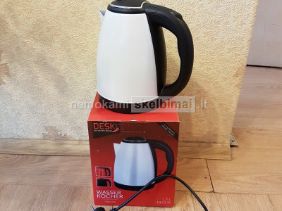
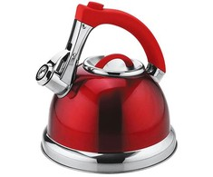

Elektriniai virduliai | ZEMAKAINA.LT
- Virduliai - Krinona
Elektriniai virduliai: Delonghi, Bosch, KitchenAid, Graef internetu gera kaina. Aukšta kokybė, greitas pristatymas visoje Lietuvoje bei 24 mėnesių garantija. - Elektriniai virduliai
Aukštos kokybės virduliai internetu pigiau. Greitas pristatymas. ... Nerūdijančio plieno; Tūris 2 L; Vandeniui užverdant virdulys pradeda švilpti; - Virduliai - avitela.lt
Smulki virtuvės technika - Virduliai. Internetinė parduotuvė Ermitazas.lt. Pateikti duomenys apie prekių likučius ir kainas tam tikrais atvejais gali skirtis nuo realių prekių kainų ir likučių parduotuvėse. - Elektriniai virduliai | ZEMAKAINA.LT
Elektriniai virduliai už gerą kainą internetu. Elektrinis virdulys yra pas kiekvieno namuose. Yra daugybė virdulių gamintojai,kurie gamina ekonominės klasės plastikinius,metalinius virdulius,jų galima rasti pradedant 6 eurais . - Virduliai, arbatinukai, kavinukai - Legida
Elektriniai virduliai – inovacija, pakeitusi senuosius vandens šildymo metodus. Kavos, arbatos bei kitų karštųjų gėrimų mėgėjams virdulys – tiesiog būtinas prietaisas. Juo mėgstamus gėrimus pasigaminsite vos per kelias minutes. Nerūdijančio plieno, juodą ar baltą korpusą galite priderinti prie bendro virtuvės interjero. - Elektriniai virduliai | Smulki virtuvės technika | Senukai.lt
Virduliai, kavinukai. Išsirinkite ir mėgaukitės patinkančiais karštais gėrimais! Elektrinis virdulys ar kavinukas - tai prietaisai, kuriuos turi dažnas kavos ar arbatos mėgėjas. Jei šiuos gėrimus mėgstate ir jūs, kviečiame išsirinkti iš žemiau esančių virdulių. - ELEKTRINIAI VIRDULIAI – PLATUS PASIRINKIMAS || 1A.LT
Plastikiniai virduliai yra patrauklūs dėl savo žemos kainos. Iš nerūdijančio plieno pagaminti elektriniai virduliai bus patvaresni, o tinkamai prižiūrimi tarnaus ne vienus metus. Ieškantiems originalesnių sprendimų, siūlome atkreipti dėmesį į stiklinius arbatinukus. Mėgstantiems tikslumą, siūlome rinktis modernius modelius ... - Elektriniai virduliai | Virduliai internetu - Topocentras
Jeigu gyvenate vienas ar dviese nebūtina pirkti dviejų litrų virdulio, kuris labiau tinka didelėms šeimoms. Maži virduliai užvirina vandenį greičiau, tuo pačiu sunaudoja ir mažiau elektros energijos. 1,7 litro talpos elektriniai virduliai yra patys populiariausi, mažiau populiarūs dviejų puodelių virduliai. - Virduliai | Buitinė technika | Televizoriai | Garso ...
Virduliai; Prekių palyginime yra 0 0. Kategorija: Virduliai. 13,93 EUR 13,99 EUR Virdulys ETA659990010 Lorinka (balta/smėlio spalv... Virdulys ETA659990010 Lorinka Galingumas- 2200 W Virdulio talpa- 1,0 l Centrinė... Plačiau. 13,93 EUR 13,99 EUR Virdulys ... - Virduliai - Kavos Draugas
Virduliai, Vandens virdulys - neatsiejama virtuvės dalis. Stilingo dizaino ir aukščiausios kokybės virduliai internetu parduodami itin patraukliomis kainomis.
Prisijungimas Prisijungimas Prekių krepšelis Krepšelis tuščias. Viso prekių už 0 00 € Peržiūrėti krepšelį Prekių pristatymas Mokėjimo būdai Garantijos ir grąžinimas Kontaktai
8 666 81881
Užsakymai telefonu
9.00-18.00 darbo dienomis
Buičiai, darbams Sodo technika Plovimo įranga Grandininiai pjūklai Žoliapjovės, vejapjovės Trimeriai, krūmapjovės Motoblokai Kultivatoriai Lapų pūstuvai Šakų smulkintuvai Malkų skaldyklės Sniego valytuvai Šlavimo mašinos Gyvatvorių žirklės Siurbliai , hidroforai Aeratoriai, skarifikatoriai Priedai sodo technikai Sodo įrankiai Laistymo įranga Elektriniai įrankiai Medžio, metalo staklės Šlifuokliai Diskiniai pjūklai Frezavimo įrankiai Siaurapjūkliai Smūginiai gręžtuvai Suktuvai-gręžtuvai Perforatoriai Plytelių pjaustyklės Skiedinio maišyklės Betono maišyklės Fenai (orpūtės) Klijų pistoletai Generatoriai Oro kompresoriai Suvirinimo aparatai Elektriniai galąstuvai Šviestuvai, prožektoriai Akumuliatoriai, pakrovėjai Litavimo stotelės Rankiniai įrankiai Įrankių komplektai Replės, žnyplės Žirklės, sekatoriai Kabių pistoletai Kniedikliai Plaktukai Spaustuvai Kopėčios, pastoliai Matavimo prietaisai Nivelyrai Atstumo matuokliai Gulsčiukai Matavimo liniuotės Matlankiai Mikrometrai Slankmačiai Dulkių siurbliai, valytuvai Langų valytuvai Gariniai valytuvai Dulkių siurbliai (šluotos) Dulkių siurbliai (plaunantys) Dulkių siurbliai (cikloniniai) Dulkių siurbliai (robotai) Dulkių siurbliai (su maišeliu) Dulkių siurbliai (vakuuminiai) Siurbliai (pelenų, statyb.) Dulkių siurbliai (rankiniai) Dulkių siurblių priedai Automobilinė įranga Automobiliniai kompresoriai Domkratai, keltuvai Gariniai valytuvai Akumuliatorių pakrovėjai Dulkių siurbliai (automobiliniai) Šaldytuvai (automobiliniai) Įtampos keitikliai Spec. automobiliniai įrankiai Variklinė alyva Auto chemija Šildymo, vėdinimo įranga Oro kondicionieriai (mobilūs) Drėgmės surinkėjai Oro drėkintuvai Aromatizatoriai Oro valytuvai Oro ventiliatoriai Oro šildytuvai Bio-židiniai Orų stotelės Smulki buitinė technika Siuvimo mašinos Laidynės, lygintuvai Lygintuvai (garų generatoriai) Lyginimo sistemos Drabužių garintuvai Manekenai siuvimui Pūkų surinktuvai Gyvūnų prekės Kačių draskyklės Gyvūnų kirpimo mašinėlės Dirbtiniai augalai Dirbtiniai augalai (be žiedų) Dirbtiniai augalai (žydintys) Virtuvei, namams Smulki virtuvės technika Sulčiaspaudės Trintuvai, blenderiai Kokteilinės, plaktuvai Virtuviniai kombainai Virduliai (elektriniai) Mėsmalės Duonkepės Gruzdintuvės Sumuštinių keptuvės Keptuvai (blynų, vaflių) Mini kaitlentės, viryklės Griliai, keptuvai Konvekcinės krosnelės Mikrobangų krosnelės Smulkūs virtuvės prietaisai Svarstyklės (virtuvinės) Vakuumavimo įranga Ledų gaminimo aparatai Spragėsių aparatai Cukraus vatos aparatai Džiovintuvai (vaisių) Skrudintuvai Mėsos pjaustyklės Peilių galąstuvai Daržovių pjaustyklės Prieskonių malūnėliai Kiaušinių virtuvai Makaronų gaminimo aparatai Kavos parduotuvė Kavos aparatai (automatiniai) Kavos aparatai (espresso) Kavos aparatai (su filtru) Kavinukai (moka) Kavamalės Pieno putų plaktuvai Kavos aparatų priedai Puodai (elektriniai) Multifunkciniai puodai Slėginiai puodai (elektriniai) Ryžių puodai (elektriniai) Garpuodžiai (elektriniai) WOK puodai (elektriniai) Fondiu puodai (elektriniai) Puodai, keptuvės Keptuvės Puodai, troškintuvai Greitpuodžiai (metaliniai) Kazanai (ketaus) Ketaus indų rinkiniai Fondiu puodai, indai Arbatinukai Stelažai, lentynos Lentynos-stelažai (mediniai) Vyno lentynos (medinės) Dėžės (medinės) Lauko, sodo baldai Pietų baldų komplektai Poilsio baldų komplektai Gultai, šezlongai Kėdės, stalai Sulankstomi baldai Hamakai Lauko baldai - židiniai Kompiuteriai Žaidimų konsolės Kompiuteriai Spausdintuvai Projektoriai Nešiojami kompiuteriai Planšetiniai kompiuteriai Sportui, laisvalaikiui Treniruokliai Inversiniai stalai Steperiai Bėgimo takeliai Treniruokliai (elipsiniai) Treniruokliai (dviračiai) Treniruokliai (spinning) Treniruokliai (vibro) Treniruokliai (irklavimo) Treniruokliai (staklės) Treniruokliai (universalūs) Atsilenkimų suoliukai / treniruokliai Štangų suoliukai Apsauginiai klimėliai Masažinės kėdės Mankštos prekės Šiaurietiško ėjimo lazdos Pasipriešinimo gumos Gimnastikos lankai Mankštos kamuoliai Pakylos (aerobikos) Kilimėliai (mankštos) Prisitraukimų skersiniai Masažiniai volai Šokdynės Sukimosi diskai Balansinės platformos Sporto inventorius Vartai, krepšinio stovai Raketės, kamuoliuokai Sportiniai tinklai Kamuoliai Smiginio (Darts) rinkiniai Šachmatai, šaškės Stalo teniso stalai Bokso inventorius Turizmo reikmenys Šaltkrepšiai Iškylos pledai Bio-tualetai (nešiojami) Kuprinės Metalo detektoriai Žvejybos reikmenys Pripučiamos valtys Valčių varikliai Valčių priedai Ledo grąžtai Žuvies rūkyklos Išmanūs laikrodžiai Išmaniosios apyrankės Riedlentės, riedžiai Riedlentės Long boardai Penny boardai Riedlentės (elektrinės) Paspirtukai, dviračiai Paspirtukai suaugusiems Elektriniai paspirtukai Elektriniai dviračiai Svarmenys Svoriai ant rankų, kojų Pasunkintos liemenės Hantelių rinkiniai Girės, svarsčiai Jėgos maišai Pavėsinės, palapinės Pavėsinės (surenkamos) Baseinai Vandens pramogos Dronai Vaikų priežiūrai Tapymas pagal skaičius Piešimo rinkiniai (16,5x13cm) Piešimo rinkiniai (29,7x21cm) Piešimo rinkiniai (50x40cm) Deimantinė mozaika Wizardi WOOD Wizardi deimantinė mozaika Automobilinės kėdutės Autokėdutės (0 - 13kg vaikams) Autokėdutės (9 - 18kg vaikams) Autokėdutės (15-36kg vaikams) Autokėdutės (22-36kg vaikams) Vežimėliai, rogutės Vežimėliai (sportiniai) Vaikiškos rogutės Dviratukai, paspirtukai Dviratukai (balansiniai) Triratukai (su rankena) Vaikiški keturačiai Paspirtukai (vaikiški) Mašinėlės (paspiriamosios) Augantys baldai Augantys stalai Kėdės vaikams Baldų komplektai Lauko žaidimų įranga Lauko batutai Surenkami baseinai Maniežai, vaikštynės Maniežai kūdikiams Vaikštynės kūdikiams Vidaus žaidimų įranga Kamuoliukų baseinai Kėdutės, supynės Maitinimo kėdutės Supynės, gultukai kūdikiams Vaikų priežiūros prietaisai Svarstyklės (kūdikių) Elektroninės auklės Vaikiškos lovytės Sveikatai, grožiui Masažo stalai Masažo stalai (VIP serija) Masažo stalai (aliuminio) Masažo stalai (mediniai) Masažo stalai (stacionarūs) Masažo stalai (su Memory Foam) Masažo stalų komplektai Pagalvėlės, paaukštinimai Masažo stalų užvalkalai Kosmetologiniai krėslai Vertikalaus masažo kėdės Masažuotojo kėdutės Masažuokliai, šildyklės Masažinės sėdynės Masažuokliai (rankiniai) Masažinės vonelės Elektrinės šildyklės Masažo akmenys Aliejaus šildytuvai Medicinos technika Kraujospūdžio matuokliai Termometrai (elektroniniai) Alergijos terapijos prietaisai Šviesos terapijos lempos Elektrostimuliatoriai Inhaliatoriai Alkotesteriai Įrankių sterilizatoriai Grožio prietaisai Manikiūro, pedikiūro prietaisai Veido odos valymo aparatai Plaukų džiovintuvai Plaukų tiesintuvai Plaukų suktuvai Epiliatoriai Barzdaskutės, barzdakirpės Plaukų kirpimo mašinėlės Kosmetiniai veidrodžiai Fotoepiliatoriai Dantų šepetėliai Higienos prietaisai Išmanūs tualeto dangčiai Nešiojami bio-tualetai TOP AKCIJOSPrekių katalogas
Buičiai, darbams Sodo technika Plovimo įranga Aukšto slėgio plovyklos Plovyklų priedai Grandininiai pjūklai Akumuliatoriniai pjūklai Elektriniai grandininiai pjūklai Benzininiai grandininiai pjūklai Grandinių galandinimo staklės Žoliapjovės, vejapjovės Žoliapjovės (elektrinės) Žoliapjovės (benzininės) Žoliapjovės (mechaninės) Žoliapjovės (akumuliatorinės) Vejos traktoriukai, šienapjovės Trimeriai, krūmapjovės Benzininiai trimeriai Elektriniai trimeriai Akumuliatoriniai trimeriai Motoblokai Kultivatoriai Lapų pūstuvai Šakų smulkintuvai Malkų skaldyklės Sniego valytuvai Šlavimo mašinos Gyvatvorių žirklės Elektrinės gyvatvorių žirklės Akumuliatorinės gyv. žirklės Benzininės gyvatvorių žirklės Aukštapjovės, genėtuvai Siurbliai , hidroforai Aeratoriai, skarifikatoriai Priedai sodo technikai Alyvos, tepalai Skaldylių pleištai Technikos priedai Apsaugos veidui Sodo įrankiai Laistymo įranga Elektriniai įrankiai Medžio, metalo staklės Pjovimo staklės Obliavimo staklės Gręžimo staklės Frezavimo staklės Tekinimo staklės Šlifavimo staklės Darbastaliai Šlifuokliai Kampiniai šlifuokliai Ekscentriniai šlifuokliai Vibraciniai šlifuokliai Sienų ir lubų šlifuokliai Juostiniai šlifuokliai Trikampiai šlifuokliai Diskiniai pjūklai Frezavimo įrankiai Siaurapjūkliai Smūginiai gręžtuvai Suktuvai-gręžtuvai Perforatoriai Plytelių pjaustyklės Skiedinio maišyklės Betono maišyklės Fenai (orpūtės) Klijų pistoletai Generatoriai Oro kompresoriai Vienfaziai kompresoriai Trifaziai kompresoriai Pneumatiniai įrankiai Suvirinimo aparatai Elektriniai galąstuvai Šviestuvai, prožektoriai Akumuliatoriai, pakrovėjai Litavimo stotelės Rankiniai įrankiai Įrankių komplektai Replės, žnyplės Žirklės, sekatoriai Kabių pistoletai Kniedikliai Plaktukai Spaustuvai Kopėčios, pastoliai Matavimo prietaisai Nivelyrai Lazeriniai nivelyrai Optiniai nivelyrai Stovai, štatyvai Atstumo matuokliai Gulsčiukai Matavimo liniuotės Matlankiai Mikrometrai Slankmačiai Dulkių siurbliai, valytuvai Langų valytuvai Gariniai valytuvai Dulkių siurbliai (šluotos) Dulkių siurbliai (plaunantys) Dulkių siurbliai (cikloniniai) Dulkių siurbliai (robotai) Dulkių siurbliai (su maišeliu) Dulkių siurbliai (vakuuminiai) Siurbliai (pelenų, statyb.) Dulkių siurbliai (rankiniai) Dulkių siurblių priedai Automobilinė įranga Automobiliniai kompresoriai Domkratai, keltuvai Gariniai valytuvai Akumuliatorių pakrovėjai Dulkių siurbliai (automobiliniai) Šaldytuvai (automobiliniai) Termoelektriniai šaldytuvai Įtampos keitikliai Spec. automobiliniai įrankiai Variklinė alyva Auto chemija Šildymo, vėdinimo įranga Oro kondicionieriai (mobilūs) Drėgmės surinkėjai Oro drėkintuvai Aromatizatoriai Aromatiniai aliejai, filtrai Oro valytuvai Oro ventiliatoriai Oro šildytuvai Šildytuvai (spinduliniai) Šildytuvai (elektriniai) Šildytuvai (pramoniniai) Bio-židiniai Biokuras (bio-židiniams) Orų stotelės Smulki buitinė technika Siuvimo mašinos Siuvimo mašinos (elektromech.) Siuvimo mašinos (kompiuteriz.) Overlokai Siuvimo mašinų priedai Laidynės, lygintuvai Lygintuvai (garų generatoriai) Lyginimo sistemos Drabužių garintuvai Manekenai siuvimui Pūkų surinktuvai Gyvūnų prekės Kačių draskyklės Gyvūnų kirpimo mašinėlės Dirbtiniai augalai Dirbtiniai augalai (be žiedų) Dirbtiniai augalai (žydintys) Virtuvei, namams Smulki virtuvės technika Sulčiaspaudės Sulčiaspaudės (lėtaeigės) Sulčiaspaudės (išcentrinės) Sulčiaspaudės (citrusinių) Sulčiaspaudės (mechaninės) Trintuvai, blenderiai Kokteilinės, plaktuvai Virtuviniai kombainai Virduliai (elektriniai) Metaliniai virduliai Stikliniai virduliai Keramikiniai virduliai Plastikiniai virduliai Mėsmalės Duonkepės Gruzdintuvės Gruzdintuvės (be aliejaus) Gruzdintuvės (su aliejumi) Sumuštinių keptuvės Keptuvai (blynų, vaflių) Mini kaitlentės, viryklės Griliai, keptuvai Griliai (uždaro kepimo) Griliai (kepimo plokštės) Griliai (rakleto) Griliai (lauko) Grilių aksesuarai Konvekcinės krosnelės Mikrobangų krosnelės Smulkūs virtuvės prietaisai Svarstyklės (virtuvinės) Vakuumavimo įranga Maisto vakuumatoriai Vakuumavimo maišeliai Ledų gaminimo aparatai Spragėsių aparatai Cukraus vatos aparatai Džiovintuvai (vaisių) Skrudintuvai Mėsos pjaustyklės Peilių galąstuvai Daržovių pjaustyklės Pjaustyklės (elektrinės) Pjaustyklės (mechaninės) Prieskonių malūnėliai Kiaušinių virtuvai Makaronų gaminimo aparatai Kavos parduotuvė Kavos aparatai (automatiniai) Kavos aparatai (espresso) Kavos aparatai (su filtru) Kavinukai (moka) Kavamalės Pieno putų plaktuvai Kavos aparatų priedai Puodai (elektriniai) Multifunkciniai puodai Slėginiai puodai (elektriniai) Ryžių puodai (elektriniai) Garpuodžiai (elektriniai) WOK puodai (elektriniai) Fondiu puodai (elektriniai) Puodai, keptuvės Keptuvės Keptuvės (indukcinės) Keptuvės (ketaus) Keptuvės (tefloninės) Keptuvės (akmens masės) Puodai, troškintuvai Puodai (ketaus) Puodai (keramikiniai) Puodai (aliuminio lydinio) Puodai (rinkiniai) Greitpuodžiai (metaliniai) Kazanai (ketaus) Ketaus indų rinkiniai Fondiu puodai, indai Arbatinukai Arbatinukai (ketaus) Arbatinukai (metaliniai) Stelažai, lentynos Lentynos-stelažai (mediniai) Vyno lentynos (medinės) Dėžės (medinės) Lauko, sodo baldai Pietų baldų komplektai Poilsio baldų komplektai Gultai, šezlongai Kėdės, stalai Sulankstomi baldai Hamakai Lauko baldai - židiniai Kompiuteriai Žaidimų konsolės Kompiuteriai Spausdintuvai Projektoriai Nešiojami kompiuteriai Planšetiniai kompiuteriai Sportui, laisvalaikiui Treniruokliai Inversiniai stalai Steperiai Bėgimo takeliai Treniruokliai (elipsiniai) Treniruokliai (dviračiai) Treniruokliai (spinning) Treniruokliai (vibro) Treniruokliai (irklavimo) Treniruokliai (staklės) Treniruokliai (universalūs) Atsilenkimų suoliukai / treniruokliai Štangų suoliukai Apsauginiai klimėliai Masažinės kėdės Mankštos prekės Šiaurietiško ėjimo lazdos Pasipriešinimo gumos Gimnastikos lankai Mankštos kamuoliai Pakylos (aerobikos) Kilimėliai (mankštos) Prisitraukimų skersiniai Masažiniai volai Šokdynės Sukimosi diskai Balansinės platformos Sporto inventorius Vartai, krepšinio stovai Krepšinio stovai Futbolo vartai Raketės, kamuoliuokai Stalo teniso raketės Badmintono raketės Stalo teniso kamuoliukai Badmintono skrajukės Sportiniai tinklai Badmintono tinklai Tinklinio tinklai Futbolo tinklai Stalo teniso tinklai Krepšinio tinkliukai Kamuoliai Krepšinio kamuoliai Futbolo kamuoliai Tinklinio kamuoliai Rankinio kamuoliai Smiginio (Darts) rinkiniai Smiginio taikiniai Smiginio strėlytės Šachmatai, šaškės Stalo teniso stalai Bokso inventorius Bokso maišai Bokso pirštinės / šalmai Vaikiški bokso rinkiniai Turizmo reikmenys Šaltkrepšiai Iškylos pledai Bio-tualetai (nešiojami) Biotualetų priedai Kuprinės Metalo detektoriai Žvejybos reikmenys Pripučiamos valtys Valčių varikliai Valčių priedai Ledo grąžtai Žuvies rūkyklos Išmanūs laikrodžiai Išmaniosios apyrankės Riedlentės, riedžiai Riedlentės Long boardai Penny boardai Riedlentės (elektrinės) Paspirtukai, dviračiai Paspirtukai suaugusiems Elektriniai paspirtukai Elektriniai dviračiai Svarmenys Svoriai ant rankų, kojų Pasunkintos liemenės Hantelių rinkiniai Girės, svarsčiai Jėgos maišai Pavėsinės, palapinės Pavėsinės (surenkamos) Baseinai Vandens pramogos Dronai Vaikų priežiūrai Tapymas pagal skaičius Piešimo rinkiniai (16,5x13cm) Piešimo rinkiniai (29,7x21cm) Piešimo rinkiniai (50x40cm) Deimantinė mozaika Wizardi WOOD Wizardi deimantinė mozaika Automobilinės kėdutės Autokėdutės (0 - 13kg vaikams) Autokėdutės (9 - 18kg vaikams) Autokėdutės (15-36kg vaikams) Autokėdutės (22-36kg vaikams) Vežimėliai, rogutės Vežimėliai (sportiniai) Vaikiškos rogutės Dviratukai, paspirtukai Dviratukai (balansiniai) Triratukai (su rankena) Vaikiški keturačiai Paspirtukai (vaikiški) Mašinėlės (paspiriamosios) Augantys baldai Augantys stalai Kėdės vaikams Baldų komplektai Lauko žaidimų įranga Lauko batutai Surenkami baseinai Maniežai, vaikštynės Maniežai kūdikiams Vaikštynės kūdikiams Vidaus žaidimų įranga Laipiojimo kopetėlės Žaidimų stalai Stalo futbolas Biliardas Stalo ledo ritulys Pokeris Kamuoliukų baseinai Kėdutės, supynės Maitinimo kėdutės Supynės, gultukai kūdikiams Vaikų priežiūros prietaisai Svarstyklės (kūdikių) Elektroninės auklės Vaikiškos lovytės Sveikatai, grožiui Masažo stalai Masažo stalai (VIP serija) Masažo stalai (aliuminio) Masažo stalai (mediniai) Masažo stalai (stacionarūs) Masažo stalai (su Memory Foam) Masažo stalų komplektai Pagalvėlės, paaukštinimai Masažo stalų užvalkalai Kosmetologiniai krėslai Vertikalaus masažo kėdės Masažuotojo kėdutės Masažuokliai, šildyklės Masažinės sėdynės Masažuokliai (rankiniai) Masažinės vonelės Elektrinės šildyklės Masažo akmenys Karšto masažo akmenys Akmenų šildytuvai Aliejaus šildytuvai Medicinos technika Kraujospūdžio matuokliai Termometrai (elektroniniai) Vonios svarstyklės Dantų šepetėliai Alergijos terapijos prietaisai Šviesos terapijos lempos Elektrostimuliatoriai Inhaliatoriai Alkotesteriai Įrankių sterilizatoriai Grožio prietaisai Manikiūro, pedikiūro prietaisai Dantų šepetėliai Veido odos valymo aparatai Plaukų džiovintuvai Plaukų tiesintuvai Plaukų suktuvai Epiliatoriai Barzdaskutės, barzdakirpės Plaukų kirpimo mašinėlės Kosmetiniai veidrodžiai Fotoepiliatoriai Dantų šepetėliai Higienos prietaisai Išmanūs tualeto dangčiai Nešiojami bio-tualetai TOP AKCIJOS Pradžia / Virtuvei, namams / Smulki virtuvės technika / Virduliai (elektriniai)Virtuvei, namams
Smulki virtuvės technika Sulčiaspaudės Trintuvai, blenderiai Kokteilinės, plaktuvai Virtuviniai kombainai Virduliai (elektriniai) Metaliniai virduliai Stikliniai virduliai Keramikiniai virduliai Plastikiniai virduliai Mėsmalės Duonkepės Gruzdintuvės Sumuštinių keptuvės Keptuvai (blynų, vaflių) Mini kaitlentės, viryklės Griliai, keptuvai Konvekcinės krosnelės Mikrobangų krosnelės Smulkūs virtuvės prietaisai Kavos parduotuvė Puodai (elektriniai) Puodai, keptuvės Stelažai, lentynos Lauko, sodo baldai KompiuteriaiElektriniai virduliai
Elektrinis virdulys ar kavinukas - tai prietaisai, kuriuos turi dažnas kavos ar arbatos mėgėjas. Jei šiuos gėrimus mėgstate ir jūs, kviečiame išsirinkti iš žemiau esančių virdulių.



Mauris vulputate dolor
Rutrum fermentum nibh in augue praesent urna congue rutrum.
Etiam posuere